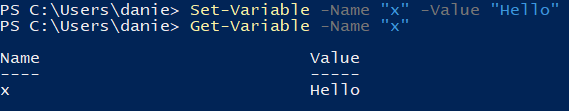
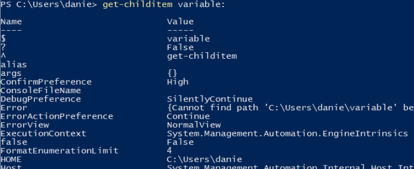

variables
We can refer to a variable with the syntax
$variable_nameSet and Get a variable• set a variable with command
Set-Variable or with its alias
set• set a variable with command
Get-Variable or with its alias
gv Retrieve all the variablesTo get a list of all variables we can use Get-ChildItem (alias ls)
